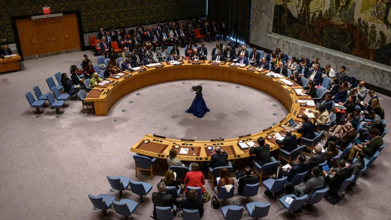

Sudan announces 'immediate' end to UN mission in war-torn country

20 November 2023
Sudan has informed the UN chief of the "immediate" end of the United Nations political mission in the war-torn country, according to a letter circulated in the Security Council.
In an official letter in Arabic dated Thursday, accompanied by an English version from the Sudanese ambassador to the UN, Foreign Minister Ali Elsadig Ali informed Antonio Guterres of "the decision of the government of Sudan to terminate the United Nations Integrated Transition Assistance Mission in Sudan (UNITAMS) with immediate effect."
According to the English version, UNITAMS had aimed to "assist the transitional government of Sudan after the December 2018 revolution," but the government said the mission had proven "disappointing."
However, Khartoum said it would continue to work "constructively" with the United Nations.
Guterres spokesman Stephane Dujarric said Friday the mission's mandate was scheduled to end on December 3.
"The Secretary-General has appointed Ian Martin to lead a strategic review of the UN Mission in Sudan to provide the Security Council with options on how to adapt the mission's mandate," he said.
Guterres was also appointing Algeria's Ramtane Lamamra as his personal envoy for Sudan.
"We will continue to engage closely with all actors, including the Sudanese authorities and members of the Security Council, to clarify next steps," Dujarric said.
UNITAMS employs 245 people, including 88 in Port Sudan, as well as others outside Sudan in Nairobi and Addis Ababa, Dujarric confirmed.
In an address to the Security Council on Thursday, the UN assistant secretary general for Africa, Martha Ama Akyaa Pobee, denounced the spread of the conflict to other parts of Sudan, which already has the largest number of displaced people in the world.
"Sudan is facing a convergence of a worsening humanitarian calamity and a catastrophic human rights crisis," she said.
After almost seven months of fighting between the Sudanese army, led by General Abdel Fattah al-Burhane, and the paramilitary Rapid Support Forces (RSF), led by General Mohamed Hamdan Daglo, almost 25 million people need humanitarian aid in Sudan, UN humanitarian operations chief Martin Griffiths said Monday.
The civil war, which started on April 15, has left more than 10,000 dead, according to an estimate by the NGO Armed Conflict Location & Event Data Project (Acled), a figure that is widely considered an underestimate.